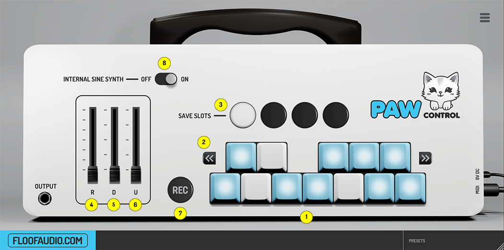

1. Key Selectors
These 12 key selectors represent the 12 notes of an octave, allowing you to select which MIDI
notes
are active. A blue keycap indicates an active note; white indicates inactive. This selection
applies
to all octaves. The plugin highlights outputted keys in brown. Inactive notes will be replaced
by
the nearest active note upon play.
2. Key Selection Nudgers
Two buttons enable nudging all key selections one step to the left or right, facilitating quick
scale modulation. For instance, selecting a minor scale in C and clicking the right nudger
changes
the scale to C# minor, and so forth.
3. Saveslots
Four buttons allow for quick switching between different key selections. The active saveslot is
highlighted. Selections auto-save to the current slot, with the ability to copy selections
across
slots using Ctrl/Command+click.
4. Random Range
This slider adds randomness to MIDI output relative to the input note, with a range both above
and
below the input but confined to the current key selection.
5. Octave Down Range
Adjusts the likelihood of producing notes one or more octaves below the input note.
6. Octave Up Range
Similar to the Octave Down Range but affects octaves above the input note.
7. REC
Deactivates key selectors for setting selection via MIDI input. Click REC again to save.
Holding
Ctrl/Command and clicking enters MIDI learn mode for saveslots.
8. Internal Sine Synth On/Off
Toggles the internal sine synth, impacting plugin performance.
INSTALLATION GUIDE
General installation notes
Installation of this plugin is as simply as placing the plugin file in a directory
where your DAW host is able to locate it. The download includes both an installer
that will
do this for you, and
the plugin file itself if you do not wish to use the installer. The installer might
not be
trusted by your operating system due to it
not being digitally signed which is costly and something i might add in the future.
I
can assure you that it is perfectly safe as long as you downloaded the plugin from
my
site at gumroad. However you can choose to simply move the plugin file to your
desired
directory if you decide that you do not want to trust it
Windows
VST Plugins for windows are generally located in C/user/vst3. However it is
dependable on
the DAW host.
Mac
Linux
If you're a linux user you can probably figure this out.
DAW SETUP GUIDE
STUDIO ONE
Image of routing and some explanation.
ABLETON LIVE
FL STUDIO
BITWIG
REASON